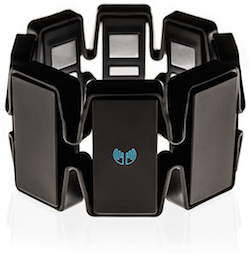

Dexto
Home
3D View
Room
Documentation
Calibration
Error:
In order to use the 3D Viewer you need to calibrate your Myo.
Error:
Make sure to connect your Myo

Calibration
Calibration Progress
0% Complete
Make your hand flat and raise it above any surfaces then wait a few seconds
Error:
Make sure to connect your Myo